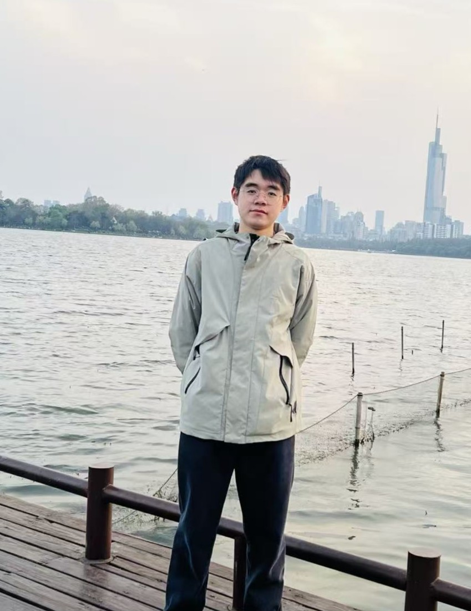
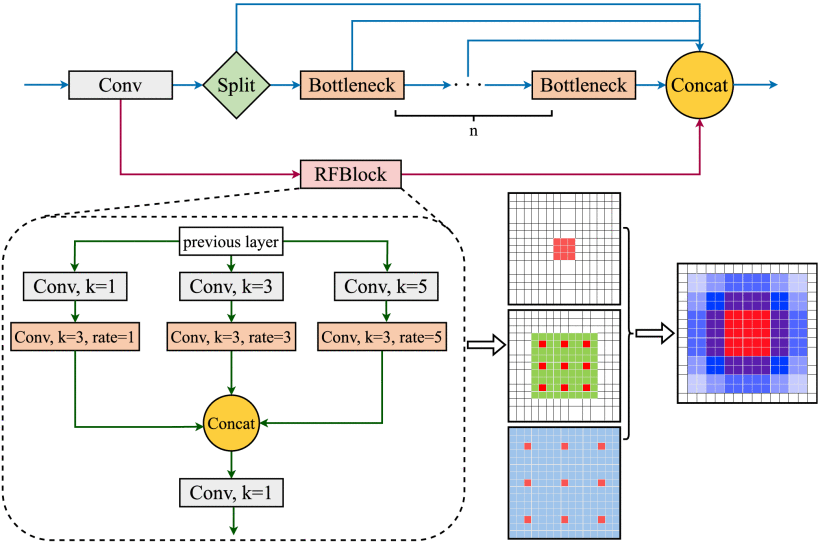
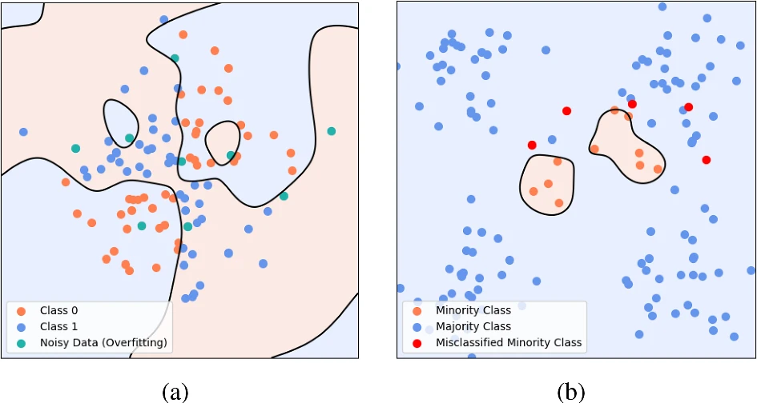
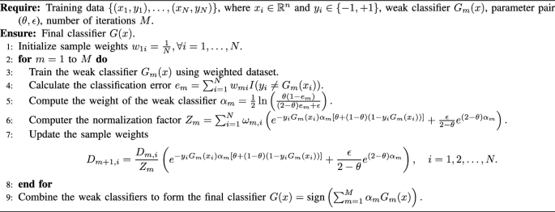
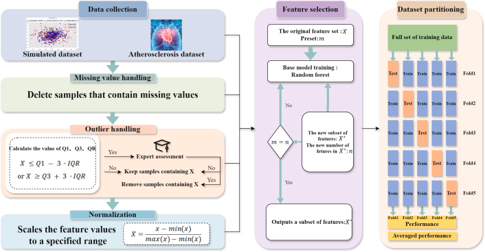
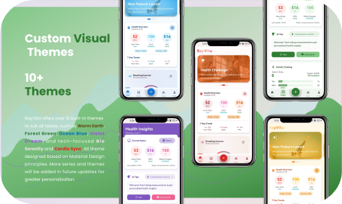

|
Ziheng Wang I am currently an undergraduate advised by Xu Cheng (NUIST). I will soon begin my Ph.D. at the PCA Lab , co-advised by Jian Yang (NKU) and Jianjun Qian (NJUST). My research focuses on building reliable visual intelligence systems, with interests spanning deep learning, computer vision, pattern recognition, and computer graphics. I am particularly passionate about connecting perception with real-world applications, and always open to academic collaboration. Feel free to reach out at zhwang@nuist.edu.cn. |
 |
ResearchMy interests lie in intelligent perception, human-centered sensing, and reliable machine learning under real-world constraints such as noise and data imbalance. I enjoy transforming ideas into practical systems — from algorithms and datasets to deployable prototypes across software and embedded platforms. |
|  |
Think Locally, Act Globally: A Frequency‑Spatial Fusion Network for Infrared Small Target Detection
Weijie Xu, Zhenglong Ding, Ziheng Wang, Zhiqing Cui, Yifan Hu, Feng Jiang IEEE Transactions on Geoscience and Remote Sensing, 2025 | Publisher: IEEE We introduce FSCFNet on YOLOv10n with a novel frequency‑spatial convolution (FSConv) using Haar wavelets. High‑frequency branches enhance tiny‑target details while low‑frequency branches keep global context. An asymmetric cross‑domain attention (ACA) module sharpens the typical Gaussian‑like local patterns of IR small targets; customized multi‑scale receptive designs improve speed‑accuracy trade‑offs. |
|   |
APPBoost: an adaptive parameter pair boosting algorithm for enhanced robustness against noise and imbalance
Ziheng Wang, Zixuan Shao, Baowei Wang, Xu Cheng The Journal of Supercomputing, 2025 | Volume 81, Issue 4, Pages 594 | Publisher: Springer US We propose APPBoost, which introduces a parameter pair within a new loss and weight‑update scheme to down‑weight noisy/mislabeled samples while preserving hard informative cases. The method bounds training error, relates to Forward Stagewise Additive Modeling, and empirically improves generalization under noise/imbalance. |
|  |
An adaptive weighted boosting framework for enhanced cardiovascular disease diagnosis
Ziheng Wang, Zixuan Shao, Baowei Wang, Xu Cheng Biomedical Signal Processing and Control, 2025 | Volume 103, Pages 107447 | Publisher: Elsevier We propose AWABoost‑SVM with two key parameters: one dynamically tunes the weight‑update strength for harder samples; the other regularizes the SVM to balance complexity and error. |
Projects |
|

|
RayVita: AI-Powered Digital Health Twin System
rPPG, HR/HRV, micro-expression, AI tips, Android + Web End-to-end health-tech ecosystem: remote vitals from camera, AI insights and coaching, and a modular UI. |
News
|

{kind=link}

| © Ziheng Wang. Built from a simplified academic homepage template. Last updated: |